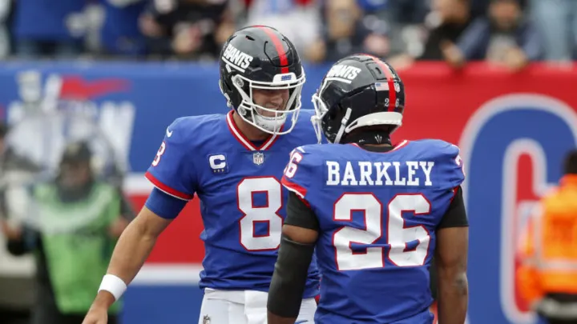
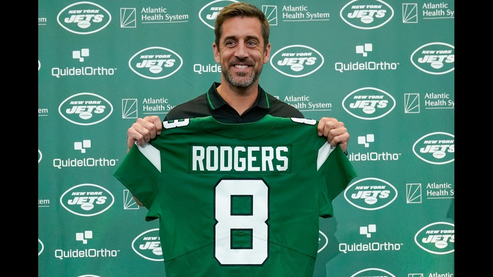

Welcome to New York Sports Hub
Giants Looking to Build on a Strong Season

The Giants were one of the NFL's biggest surprises in 2023, ending a five-year playoff drought with a roster that overachieved under head coach Brian Daboll. New York isn't going to take anyone by surprise this season, and it's fair to wonder if general manager Joe Schoen did enough in the offseason to make the team better. Schoen added a host of new receivers to help quarterback Daniel Jones—including Darren Waller, Parris Campbell, Jamison Crowder and rookie Jalin Hyatt—while grabbing a starting-caliber corner in Deonte Banks during the draft.
NFL Draft essential for Jets

With the Jets all but out of the playoffs, even with the impending return of Aaron Rodgers, the Jets and their fans do what they have done every year for the past decade plus. They start looking towards April and the NFL draft. The Jets currently sit at 4-7 and in third place in the AFC East. The Jets were supposed to look very different this year with Aaron Rodgers at the helm, but four offensive plays and no completions were all they got from the 39-year-old before the MetLife turf monster snapped his Achilles. The absence of Rodgers lifted the veil off this team and showed a lot of issues throughout the roster that a QB of his ability might have been able to cover up. With those deficiencies in mind, the team looks to rebuild throught the NFL draft.